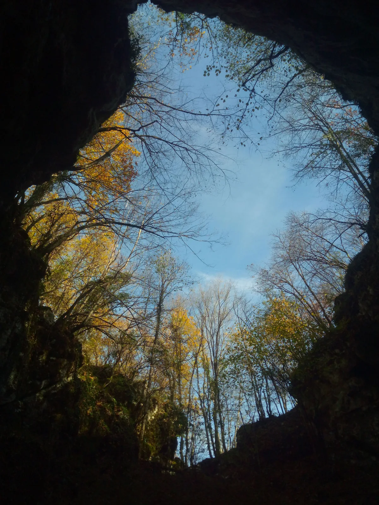

Tri gracije u bočnom kanalu
Kad se spomene odlazak na fotkanje u špilji, prva misao je kako je to jedan light izlet, opušten i sa malo tereta na leđima. Gotovo kao pješačenje u kroksama po pitoresknoj livadi. Aha.

Napisao: Marjan Prpić - Luka
Rijetko se uspije organizirati speleološki izlet isključivo u svrhe fotografiranja. Još ako je riječ o nekoj udaljenoj lokaciji, prioritet uvijek bude istraživanje. Kod špilje Adios na primjer, dodajmo k tomu još i ekstra opreme koja se mora negdje dodatno zgurati za jednosatno pješačko tegljenje (poput neoprenskih odijela, koje zbog natopljenosti vodom svi duboko mrze u povratku.) Kako smo nedavno krenuli sa kompletiranjem svih podataka o dosadašnjim istraživanjima Adiosa, od nacrta Marijana Čepelaka do svih novijih istraživanja sa namjerom javnog publiciranja za predstojeći skup speleologa, vidjelo se da nam nešto fali. Dobre fotografije. [caption id="attachment_1541" align="alignleft" width="225"] Jesenski pogled iz Adiosa[/caption]Iako u Adios sada već imam oko petnaestak „radnih“ ulazaka i napravljena je pristojna količina fotki iz istraživačkih akcija (ono, „u hodu“), što mojih, što drugih fotografa. Ali, niti jedan od njih nije bio iskorišten za dobro i cijelovito foto-dokumentiranje svih dijelova špilje. Čak ni Maligan u godinama svog prvog istraživanja (1985.) nema takvih fotografija, osim već spomenutih „radno-istraživačkih“. Ponešto toga još je ostalo na pronađenom nikada razvijenom fotografskom filmu. Kako to tek treba učiniti, odustali smo od ovogodišnje prezentacije baš iz namjere da to bude napravljeno kako spada i bez izostavljanja ijednog dijela povijesti istraživanja ove špilje. U tom cilju iskoristit ćemo buduće mjesece i današnje mogućnosti za kvalitetno foto-dokumentiranje.
Povoljno jesensko vrijeme ove godine jednostavno mami na izlete, tako da nema vikenda na kojem velebitaši ne špiljare ili planinare. Nerijetko je i više izleta u jednom vikendu, pa je u startu bilo jasno da će faliti ljudi, jer po mojim željama trebalo bi nas nekih 5-6. Ipak, snijeg na Velebitu malo je ohladio i volju za odlazak na tu planinu, tako da smo se ipak skupili potrebnim brojem. U subotu 28.10. krenuli smo put Drežnika; Ana Bakšić, Tanja Šinko, Beata Prpić, Darko Španja, Enes Bešić (HGSS Vinkovci) i ja.
Kad loviš minute, a sati ti bježe
Obaveze su spriječile Beatu i mene da ostanemo cijeli vikend tako da smo se morali vratiti odmah u subotu, čime je moj plan o fotografiranju barem dvije dvorane u startu bio skraćen. Trudili smo se to vrijeme nadoknaditi ranim polaskom, ali krenulo je sa kraćim kašnjenjem jer je ekipa iz drugog automobila shvatila da su zaboravili jednu kacigu. Da u špilju nećemo stići u planirano vrijeme bilo je već jasno odmah iza Karlovca kad smo upali u kolonu iza dva autobusa puna turista. Dodatno su pripomogle i Hrvatske ceste koje su krenule renovirati prilično dugu dionicu negdje na pola puta do Slunja. Neko suludo pretjecanje ta dva autobusa nije dolazilo u obzir zbog dosadašnjeg osobnog iskustva sa karlovačkim moto-policajcima (baš na jednom odlasku u Adios).
Još uvijek se sjećam neumoljivog lica plavog Billy The Kida koji mi je zbog pretjecanja „kolone“ sastavljene od kamiona mješalice i jednog automobila preko pune trake htio naplatiti kaznu. Duljina pune trake preko koje sam pretjecao bila je nekih pet metara, iza koje je bila isprekidana linija, a to mu se odvijalo taman pred očima dok se pokušavao okrenuti u lokalnom putu. Da bi stvar bila bolja, Billy Tke Kid nakon što se okrenuo, vozio je iza mene hladno još nekih pet kilometara kroz naseljena mjesta, valjda da vidi hoću li tu napraviti kakvo prekoračenje brzine. Kada je shvatio da neću, odlučio me zaustaviti.
Sva objašnjenja što, zašto i kako - nisu pomogla. Čak ni kolegijalno pozivanje na svjetlo bratstvo vojske i policije. A-a. Jok. Policijska logika o počinjenom „kriminalu“ je neumoljiva i pravocrtna te mi je bez grča na licu odrezao 3.400 kuna kazne. Da sad ne zamaram detaljima, nisam htio platiti, a pušten sam samo sa usmenom opomenom, jer su provjerom preko veze ustanovili da nemam evidentiranih vozačkih prekršaja. Na njegovu ogromnu žalost. To iskustvo me koči i dan-danas. Uz ona dva autobusa ispred.
Da bi stvar bila bolja, kada smo došli do Rastoka, one turiste je to valjda toliko raspametilo da su vozači autobusa odlučili smanjiti brzinu na jedva 15 km na sat kako bi svi stigli vidjeti i opaliti koju fotku ili možda selfie. Briga njih za naše špiljsko fotkanje. I tako smo odguslali sve do centra Slunja gdje smo skrenuli na kavu. [caption id="attachment_1546" align="alignleft" width="300"] Vuneni odbor za doček speleologa[/caption]Na parkiralište smo lagano razdraženi stigli smo gotovo u isto vrijeme, Ana sa svojom ekipom i nas dvoje. Popili čaj i kave na suncu pa zadovoljni što više nema autobusa krenuli prema Drežniku. Kod farme na Sadilovcu su nas dočekale stotine ovaca i jedan prilično glasni četveronožni čuvar vunenih travojeda, a u Adios smo se praćeni suncem i sumnjičavim pogledima na medvjeđe tragove spustili oko pola jedan popodne, kasnije od plana, malo pojeli i spremili se za ulazak.
Onaj Murphy odnekud je opet iskočio... U opremanju smo ustanovili da je Španja zaboravio kombinezon, a Enes ima svoj GSS-ovski sa onim flourescentnim trakama u kojem bi pod flešom bljesnuo gore od kola hitne pomoći te su se automatski eliminirali kao manekeni iz budućih fotki.Glavnu ulogu svjetlonoša i manekenki preuzele su tri cure; Ana, Tanja i Beata. Ova dvojica će se skrivati po kanalima i eventualno razmjestiti neki sakriveni fleš. Za fotkanje smo odabrali Dvoranu sa bijelim saljevom jer je, od tri poznate, po morfologiji najteža za prijelaz, ali i za fotkanje.
[caption id="attachment_1540" align="alignnone" width="1333"] Adios, Dvorana sa bijelim saljevom[/caption]U dvorani smo se na brzinu upoznali sa detaljima kako manualno promijeniti jačinu na flešu (koji nisu TTL varijanta), kako ga postaviti i na što je sve potrebno obratiti pažnju. Da se ne bi dovikivali po špilji na relaciji „ja-najudaljeniji“, ponijeli smo i male radio-stanice (one jeftikanerske sa dometom 5 km). I pokazalo se da to dosta dobro i brzo funkcionira u ovakvim potrebama. Postavile smo se kako sam početno zamislio i krenuli sa fotkanjem, uz male (naravno, opet ) probleme. Iako su fleševi okidali doma i na početnom brifingu u špilji, kada smo se rasporedili okidao je samo jedan, dok tri unatoč svjetlima na trigerima kako primaju signal - nisu htjeli. Ipak brzim mijenjanjem nekih postavki, sve je proradilo pa smo na kraju ipak odradili posao u dvorani. Ovoga puta smo primjetili i jednu novost, naime čini se da su šišmiši odabrali ovu dvoranu za svoje zimsko obitavalište, što do sada koliko ja posjećujem Adios i pratim promjene nije bio slučaj. Veliku koloniju zamijetili smo 2012. ali puno dalje, u dijelu špilje sa aktivnim vodenim tokom. Poslije nisu viđani na tom mjestu, ni u tolikom broju. Malo smo se brinuli kako će šišmiši reagirati na sve te radio-signale, što od bljeskalica, što od uređaja veze, no čini se da ih nije uopće uznemirilo, osim možda nekoliko njih koji su svoj protest zbog ometanja izrazili glasnim cvrljenjem.
[caption id="attachment_1552" align="alignnone" width="2000"] Tri gracije u bočnom kanalu[/caption] Fotografiranje bočnog, povratnog kanala koji vodi pod vertikalu sa prečnicom odradili smo sa namjerom provjere mog nacrta. Naime, pri izradi novog nacrta pokazalo se manje odstupanje tog kanala koji završava na dnu te jame. Nacrt također nije rađen na mjestu već naknadno i u malobrojnoj ekipi, a tako se teško mogla ustanoviti morfologija jame i njen odnos prema gore postavljenoj prečnici. Kako smo špilju snimali dalje i prema sifonu, nije se imalo vremena dodatno provjeravati, pa se nakon izrade nacrta pojavila i sumnja o mogućem krivo izmjerenom poligonskom vlaku. Kako nije riječ o velikom kanalu koji bitno mijenja smjer cijele špilje ili tako nešto, a radila su se dalja istraživanja, provjera istoga ostavila se za „neki drugi put“. [caption id="attachment_1551" align="alignleft" width="178"] Tanja na prečnici[/caption]Sada smo poslali Beatu i Tanju na prečnicu, a Ana i ja otišli na dno vertikale i fotkali odozdo. Fotografija je pokazala da je nacrt ipak OK te kako jama u sredini ispod prečnice nije baš okomita već više ispupčenija. Vratili smo se u gornju etaži, pofotkali još malo kanala kojim su spojene prva i druga dvorana, te se izvukli van iz špilje. Već je bilo četiri sata popodne, a nas dvoje smo se morali vratiti da ne drljamo po mraku kroz šumu. Iako mrak nije toliki problem, više je stvar nelagode zbog posvuda brojnih tragova medvjeda.
Ostavili smo ekipu da loži vatru i pripremi bivak pa krenuli prema svom automobilu. Putem nismo sreli niti jednog medvjeda, dok su nas je kod farme opet ispratilo ogromno stado ovaca i jedan radoznali konj koji se voli fotografirati. To smo na kraju ovjekovječili mobitelom jer nam je bilo mrsko vaditi fotić iz kofera umazanih blatom.
[caption id="attachment_1567" align="alignnone" width="2000"] Foto ekipa uz male odjevne prilagodbe.[/caption]Posjet Drežniku nije potpun bez tradicionalne mrzle pive u caffe baru Hodak, pa smo i to napravili, jer tradicija je tradicija. U Zagreb smo krenuli već po mraku, a na cesti srećom nije bilo niti jednog moto-policajca ili autobusa sa turistima. Srećkovići koji su mogli provesti cijeli vikend u prirodi, sutradan su se spustili u obližnju jamu Fosilnicu, kako bi se završio i kompletirao njen nacrt. I to su sa uspjehom odradili te se i oni sigurno vratili u Zagreb.
I kad se sve zbroji unatoč tim potrošenim satima i sitnicama koje usporavaju i znaju ići na živce, dobit će se dvije-tri fotografije (često i samo jedna) vrijedne truda. :D :D Taman toliko da se slijedeći put u špiljarskoj masi dobije volja za foto-izlet. [gallery ids="1546,1547,1567,1541,1540,1549,1552,1551,1550,1548,1545,1544,1543" type="rectangular"]